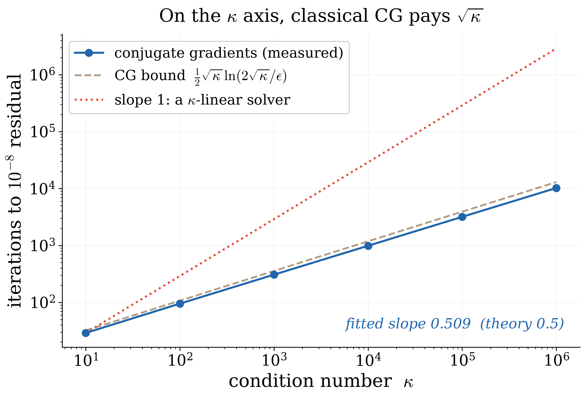
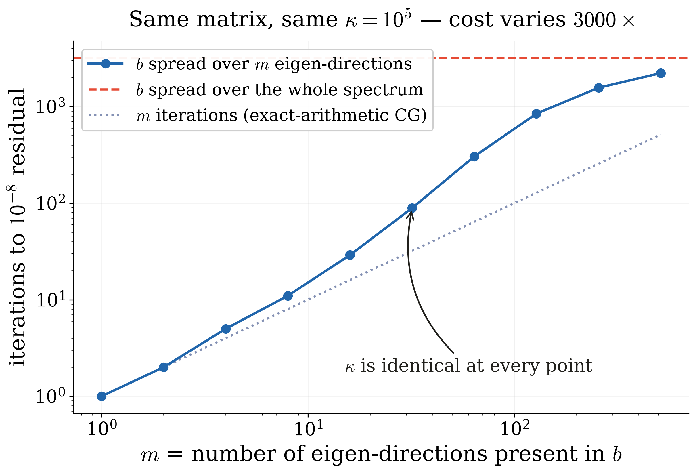
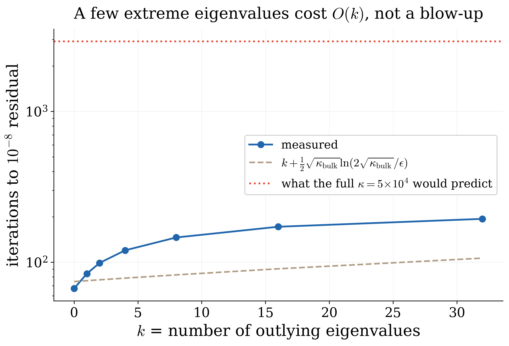
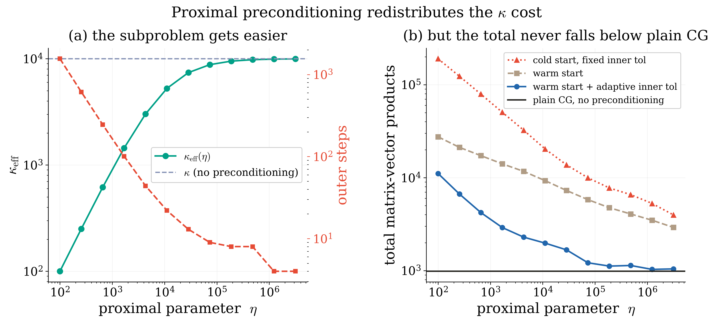

Solving \(Ax=b\) is the workhorse subroutine underneath quantum algorithms for differential equations, optimization, and machine learning. The advertised prize is an exponential speedup in the dimension \(N\). The fine print is always the same symbol: \(\kappa\), the condition number, the ratio of largest to smallest singular value. Runtimes are quoted in it, lower bounds are proved in it, and preconditioning exists to reduce it.
This post asks a narrower question than "is quantum faster." It asks: what is \(\kappa\) actually measuring? The answer, which classical numerical analysis has known since the 1950s and the quantum literature has recently rediscovered from scratch, is that \(\kappa\) is a worst case over right-hand sides — and that the worst case is often nothing like the instance in front of you. The interesting part is what happens when you compare how the two fields discount that worst case. They do not discount the same thing.
Two things are not up for debate, and the post concedes them before it argues anything.
Classical iterative methods are already better than \(\kappa\)-linear on the \(\kappa\) axis. For positive-definite \(A\), conjugate gradients converges in \(O(\sqrt{\kappa}\log(1/\epsilon))\) iterations. Quantum linear solvers do not beat this. Orsucci and Dunjko (Quantum 5, 573, 2021) proved an \(\Omega(\kappa)\) query lower bound that holds even when \(A\) is positive definite — precisely to rule out the hope that quantum could match CG's \(\sqrt{\kappa}\).

Instance-dependence is already published on the quantum side. It is not a new observation that \(\kappa\) is pessimistic. Li (arXiv:2510.05588) notes that existing solvers overlook the structure of \(b\), whose alignment with \(A\)'s eigenspaces strongly affects performance. Dalzell, Li and Su (arXiv:2607.07691, July 2026) give solvers whose complexity is independent of \(\kappa\) altogether, governed instead by an effective condition number. Adhikari (Phys. Lett. A 584, 131601, 2026) has a section titled "state-aware HHL" making the same point through a spectral measure. If you came here expecting "\(\kappa\) is pessimistic" to be the punchline, it is instead the starting line.
Here is the phenomenon, measured. Fix one matrix with \(\kappa=10^5\). Vary only \(b\) — specifically, how many eigen-directions carry weight in it. Nothing about \(A\) changes.

This lens is not specific to CG, and it is worth seeing it stretched. Kim, Gidel, Kyrillidis and Pedregosa (arXiv:2211.04659, TMLR 2024) run the same residual-polynomial argument for the momentum extragradient method, where the relevant spectrum is not an interval on the positive real line but a set scattered across the complex plane. They ask the reverse question — for which spectral shapes is a given method optimal? — and read the best step sizes and momentum off the shape. The conclusion they reach from the optimization side is the one this post is pushing from the linear-algebra side: what you know about the spectrum beyond its two extreme eigenvalues is what buys the rate. Assume only \(\lambda_{\min}\) and \(\lambda_{\max}\) and you get the classical bound. Assume a shape, and you can beat it — in their minimization case, by a constant factor below the classical lower bound, which is only possible because the two-number summary was not the whole story. \(\kappa\) is that two-number summary.
Both fields now discount the worst case. Both do it with a functional of the same object — the spectral measure of \(A\) weighted by \(b\). And here is the part that appears to be unwritten: they discount different things.
The quantum effective condition number is defined by a one-sided threshold. Writing \(f(\sigma)\) for the fraction of \(\|A^{-1}b\|^2\) carried by singular values below \(\sigma\), Dalzell–Li–Su set \(\kappa_{\rm eff}=1/\sigma_*\) with \(\sigma_*\) the point at which that cumulative weight first exceeds \(\epsilon^2\). Only the small end matters. CG has no such asymmetry: it is fast whenever the weight sits on few or clustered eigenvalues, anywhere in the spectrum.
So the two easy sets should come apart, and they do. Same matrix, \(\kappa=10^5\), \(b\) on four eigen-directions, moved around the spectrum:
| Right-hand side concentrated on… | CG iterations | Effective cond. number | Verdict |
|---|---|---|---|
| 4 values at the small end | 3 | 100,000 | classically trivial, quantum worst-case |
| 4 values at the large end | 3 | 1.0 | both easy |
| 4 values spread out | 5 | 100,000 | classical easy, quantum hard |
| 16 values spread out | 29 | 100,000 | classical easy, quantum hard |
There is a second, cleaner asymmetry underneath this. Instance-easiness cuts the iteration count on both sides. But the quantum advantage for \(Ax=b\) was never on the \(\kappa\) axis — it is in the dimension, \(\mathrm{polylog}N\) per step versus \(O(dN)\) classically. So exploiting instance structure erodes exactly the axis where quantum was already behind, and leaves the \(N\) axis untouched. The \(N\) axis is then taxed separately, by state preparation, by readout, and by dequantization.
The same idea has a rigorous classical statement. Dereżiński, Epperly and Meyer (arXiv:2602.04842) show that with \(k\) large outlying singular values, the cost is \(\Theta(k+\kappa_k\log(1/\epsilon))\), where \(\kappa_k\) discounts the top \(k\). Outliers cost you a fixed number of steps, not a blow-up.

If the cost is governed by conditioning, reshape the conditioning. This is the oldest idea in the book, and it is what our Catalyst framework (Kim, Chia & Kyrillidis, AAAI 2026) does for the quantum linear system problem. The move is worth spelling out, because it is simple and the rest of this section depends on it.
Do not solve \(Ax=b\). Solve a sequence of nearby problems that are each easier, and let them converge to the answer you wanted. Concretely, from a current guess \(x_k\), produce the next one by solving \[ (I+\eta A)x_{k+1}=x_k+\eta b . \] Three things to notice. First, the fixed point is the right answer. If \(x_{k+1}=x_k=x\), the \(x\) terms cancel and \(\eta Ax=\eta b\), so \(x=A^{-1}b\) exactly — no approximation has been introduced, only a detour. Second, each subproblem is better conditioned than the original. With the spectrum of \(A\) normalized to \(\lambda_{\max}=1\), so that it lives in \([1/\kappa,1]\), the matrix \(I+\eta A\) has spectrum in \([1+\eta/\kappa,1+\eta]\), and therefore \[ \kappa_{\rm eff}(\eta)=\frac{1+\eta}{1+\eta/\kappa}=\frac{\kappa(1+\eta)}{\kappa+\eta}<\kappa \] for every finite \(\eta\). The added identity pulls the small eigenvalues away from zero, which is where all the ill-conditioning lived. Third, there is no free lunch, and \(\eta\) is the price tag. Small \(\eta\) makes each subproblem trivial — as \(\eta\to0\), \(\kappa_{\rm eff}\to1\) — but the iteration barely moves, since the error contracts only by \(1/(1+\eta/\kappa)\) per step, needing about \((\kappa/\eta)\ln(1/\epsilon)\) outer steps. Large \(\eta\) moves fast but hands you back the original problem: as \(\eta\to\infty\), \(\kappa_{\rm eff}\to\kappa\). The inner solver can be anything, classical or quantum, which is what makes this a wrapper rather than an algorithm. Note the direction of the move: this reshapes the spectral measure rather than exploiting it — the opposite of what the beyond-\(\kappa\) solvers do.
So there is a knob, and a real trade-off across it.

The optimum sits on the boundary, and the boundary is "do not precondition." That is the whole result. It is not a contradiction of the paper; it is the paper's own ceiling, observed with a classical inner solver. Catalyst-PPA claims a constant-factor improvement (roughly \(\kappa\to\kappa/2\) with a warm start) and states outright that asymptotic improvement is impossible given the \(\Omega(\kappa)\) lower bound. What the experiment adds is where the constant is worth having:
Five experiments, diagonal spectra (CG's iteration count is invariant to orthogonal change of basis, and we verify this: a randomly rotated dense system gives 671 iterations against the diagonal system's 672), double precision, five seeds, \(10^{-8}\) relative residual. Three sanity gates run before any sweep: solution error against the exact answer (\(5.9\times10^{-13}\)), the rotation-invariance check, and the \(\kappa_{\rm eff}(\eta)\) formula (exact to \(2\times10^{-16}\)). A bound-violation check runs on every execution; it fired during development, which is how the residual-versus-\(A\)-norm issue in Figure 1 was caught rather than shipped. Runs that exhaust their outer budget are recorded as unconverged and their cost is discarded rather than plotted, since a truncated run reads as a cheap one.
Three literatures — classical numerical analysis, quantum linear-system solvers, and the quantum Krylov-complexity line — compute functionals of the same measure, and largely do not cite one another. The concrete open question this leaves is a comparison nobody seems to have run: on the same family of instances, how do CG's iteration count and \(\kappa_{\rm eff}\) actually co-vary? The table in §3 is four rows of that study. The full version — sweeping the placement, width and number of clusters, with the quantum solvers actually executed — would say something useful about when a quantum linear solver is solving a problem that was hard in the first place.
There is also a composition hazard worth flagging for anyone who reads this as an argument for classical preconditioning inside a quantum pipeline: a classical reduction in \(\kappa\) does not automatically survive block-encoding. That obstruction, rather than any of the above, is the binding constraint on preconditioned quantum solvers today.